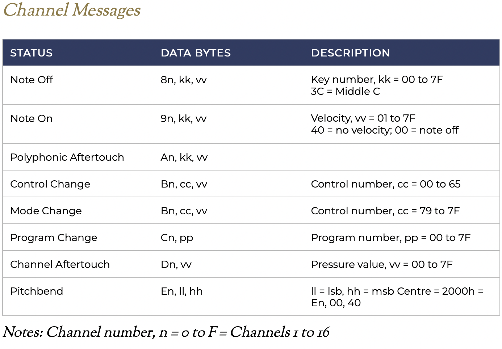
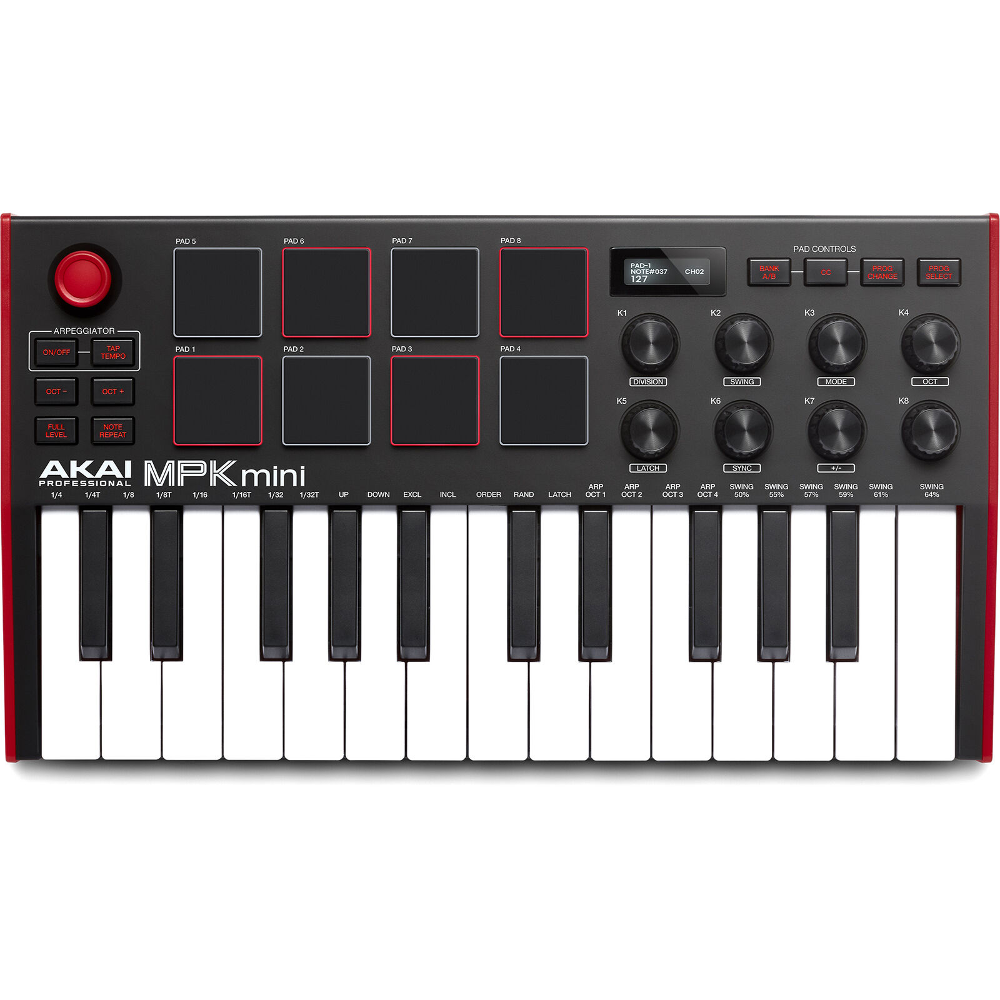
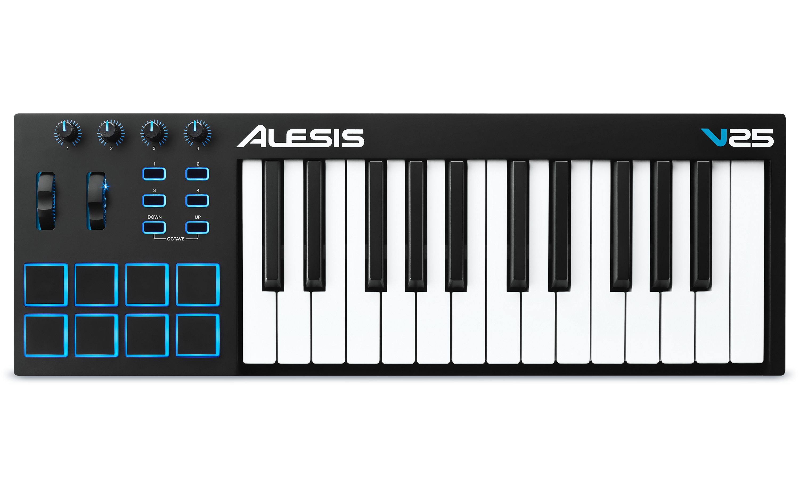

Week 11: Minimum Viable Product
Outline:
My final project will be a self-contained MIDI controller. For my minimum viable product, I aimed to get basic functions working: buttons attached to an Arduino that send MIDI signals to a computer and control a virtual instrument. This process consisted of 3 main steps. Step 0 was getting my Arduino to send MIDI signals, which I did back in . See the end of my documentation for a guide on how to convert Arduino UNO into MIDI device.
- Understand MIDI signals and how they are controlled
- Design the circuit to use for my controller
- Code a program which translates between button presses (input) and MIDI signals (output)
Understanding MIDI Communication:
MIDI (Musical Instrument Digital Interface) is a communications protocol between electronic instruments and computers. The specifications were developed around 4 decades ago. Input values, such as pitch and velocity, are generally determined by a MIDI controller (e.g. an electronic keyboard). Output values, such as sound envelope, timbre, and channel volume, are generally, but not always, controlled through a digital audio workstation on the computer. To make my MCU into a MIDI device, I had to figure out what sending a MIDI signal really meant.
After digging around a little bit, I found a few great resources. The first was Hinton Instruments's MIDI Protocol Guide. This guide details the history of MIDI and the structure of MIDI signals. These signals almost always consist of 3 bytes: command type byte, data byte 1, and data byte 2. For example, a note is sent with command type 0x90, pitch, and velocity. A modulation wheel command would be send with command type 0xB0, mod wheel-specific byte 0x01, and modulation value between 0 and 127. See below for a few examples MIDI signals taken from the Hinton Instruments guide.
The other guide I used to better understand this was Chapter Three: MIDI of Indiana University's Introduction to Computer Music. This is a great reference that goes into more detail than the Hinton guide, but takes a bit more time to parse through.
Designing Controller Input:
In this MIDI controller circuitry, output is predefined: MIDI signals sent by USB to a computer. That computer can then utilize those control signals through a DAW (Digital Audio Workstation), such as Pro Tools, Ableton, GarageBand, or Logic Pro. These DAWs can take MIDI signal and apply it to a virtual instrument (VST/AU). In addition, DAWs can adjust volume, edit instrument parameters, record samples, and much more. I generally use Logic as my DAW of choice, although I might dabble with writing a simple one of my own in the future.
So, with MIDI signal, we have all the output options we could hope for! We instead want to focus on input. For this week, I decided to go with an extremely basic formulation: 5 buttons that each send a specifc signal. Two buttons control octave (octave up and octave down), where the other three are assigned notes, like keys on a piano. I used the internal pullup resistor circuits in the Arduino to read button presses directly, without any extra resistors.

Akai MPK Mini 3
I'm basing this off of general MIDI keyboards that I've used before and seen online; see a few of these pictured below.
Akai MPK Mini 3 
Alesis V25
Let's break down some of the features here:
- Keys: These keyboards generally have good-feeling, weighty keys.
- Pads: Squishy, square pads are often used for mapping electronic drum samples, as a musician can use their fingers to play different sounds of the drums.
- Velocity Sensing: On a variety of inputs, including pads and keys, the sensors detect velocity. For keys, this is done by having two buttons under each key: one which is triggered as soon as the key is pressed, and the other which is triggered when the key has been fully pressed. The time between these two presses can be used to calculate the velocity. For pads, a variety of force sensors are instead used to implement velocity-like sensing. Either way, these terms translate to greater volume and a different sound of the shape,
- Wheels: Many controllers have two wheels: mod and pitch. The mod wheel controls modulation, often using an LFO (Low Frequency Oscillator) to create a vibrato effect. This wheel is scaled from zero to the maximum mod value. The pitch wheel is used to create a pitch bend effect, which glides a note to a nearby pitch. For most virtual instruments, the pitch bend spans a whole note above and below the pitch being played, with the wheel being centered at zero. The mod wheel stays where the user scrolls it. The pitch wheel returns to zero.
- Faders: A variety of slide and rotary faders that can be programmed to control specific features, such as channel volume, instrument parameters, and more.
Designing Input-MIDI Signal Interface Through Code:
There are several developed libraries for sending MIDI through USB from an MCU, but these are generallly MCU-specific; I wanted a solution that would work for MCUs in general, which I found and referenced in the introduction to this week. By uploading the DualMocoLUFA firmware, I can switch between the normal Arduino UNO firmware and a MIDI device just with a jumper between two ICSP pins.
For structuring my code, I based it heavily off of two fantastic tutorials: one by Nerd Musician and the other by KontinuumLAB. These tutorials have corresponding GitHub links with a general framework for code. I send a MIDI signal when the state of any input changes, corresponding to a switch throw, button press, button release, and potentiometer adjustment. Note that I ignored debouncing for my buttons and added a couple features that are characteristic of other MIDI devices.
See code below for my implementation.
const byte N_BUTTONS = 7; //* total numbers of buttons. Number of buttons in the Arduino + number of buttons on multiplexer 1 + number of buttons on multiplexer 2... (DON'T put Octave and MIDI channel (bank) buttons here)
const byte N_BUTTONS_ARDUINO = 7; //* number of buttons connected straight to the Arduino
const byte BUTTON_ARDUINO_PIN[N_BUTTONS] = {2, 3, 4, 5, 6, 7, 8}; //* pins of each button connected straight to the Arduino
byte NN = 0; // Note number or MACKIE
byte CC = 1; // Control change
byte T = 2; // Toggle
byte MESSAGE_TYPE[N_BUTTONS] = {NN, NN, NN};
byte MESSAGE_VAL[N_BUTTONS] = {60, 62, 64, 67, 69, 71, 72};
int buttonCState[N_BUTTONS] = {0, 0, 0};
int buttonPState[N_BUTTONS] = {0, 0, 0};
const byte OCTAVE_BUTTON_PIN[2] = {9, 10};
int octave = 0;
int octaveCState[2] = {0, 0};
int octavePState[2] = {0, 0};
int modePin = 11;
int mode = 0;
int modeP = 0;
const byte N_POTS = 1;
int POT_PIN[N_POTS] = {A5};
int potCState[N_POTS] = {0};
int potPState[N_POTS] = {0};
int delay_time = 200;
void setup() {
Serial.begin(31250);
for (int i = 0; i < N_BUTTONS; i++) {
pinMode(BUTTON_ARDUINO_PIN[i], INPUT_PULLUP);
}
for (int i = 0; i < 2; i++) {
pinMode(OCTAVE_BUTTON_PIN[i], INPUT_PULLUP);
}
pinMode(modePin, INPUT_PULLUP);
}
void loop() {
if (mode == 0) {
handleButtons();
}
else if (mode == 1) {
arpeggiate();
}
handleOctaves();
handlePots();
}
void handleButtons() {
for (int i = 0; i < N_BUTTONS; i++) {
buttonCState[i] = readPullup(BUTTON_ARDUINO_PIN[i]);
if (buttonCState[i] != buttonPState[i]) {
if (buttonCState[i] == 1) {
send(0x90+MESSAGE_TYPE[i], MESSAGE_VAL[i]+octave, 64);
}
else if (buttonCState[i] == 0) {
send(0x90+MESSAGE_TYPE[i], MESSAGE_VAL[i]+octave, 0);
}
}
buttonPState[i] = buttonCState[i];
}
}
void handleOctaves() {
for (int i = 0; i < 2; i++) {
octaveCState[i] = readPullup(OCTAVE_BUTTON_PIN[i]);
if (octaveCState[i] != octavePState[i] && octaveCState[i] == 1) {
if (i == 0) {
octave -= 12;
}
else if (i == 1){
octave += 12;
}
}
octavePState[i] = octaveCState[i];
}
}
void handlePots() {
for (int i = 0; i < N_POTS; i++) {
potCState[i] = map(analogRead(POT_PIN[i]), 0, 1023, 127, 0);
if (potCState[i] != potPState[i]) {
send(0xB0+1, 0x01, potCState[i]);
}
potPState[i] = potCState[i];
}
}
void arpeggiate() {
for (int i = 0; i < N_BUTTONS; i++) {
buttonCState[i] = readPullup(BUTTON_ARDUINO_PIN[i]);
if (buttonCState[i] == 1) {
send(0x90+MESSAGE_TYPE[i], MESSAGE_VAL[i]+octave, 64);
delay(delay_time);
send(0x90+MESSAGE_TYPE[i], MESSAGE_VAL[i]+octave, 0);
}
buttonPState[i] = buttonCState[i];
}
}
void checkMode() {
mode = readPullup(modePin);
if (mode != modeP) {
allOff();
modeP = mode;
}
}
// UTILITY FUNCTIONS
int readPullup(int pin) {
return 1-digitalRead(pin);
}
void noteOn(int cmd, int pitch, int velocity) {
Serial.write(cmd);
Serial.write(pitch);
Serial.write(velocity);
}
void send(byte cmd, byte db) {
Serial.write(cmd);
Serial.write(db);
}
void send(byte cmd, byte db1, byte db2) {
Serial.write(cmd);
Serial.write(db1);
Serial.write(db2);
}
// Set all notes to off
void allOff() {
for (int i = 0; i < 128; i++) {
send(0x90, i, 0);
}
}